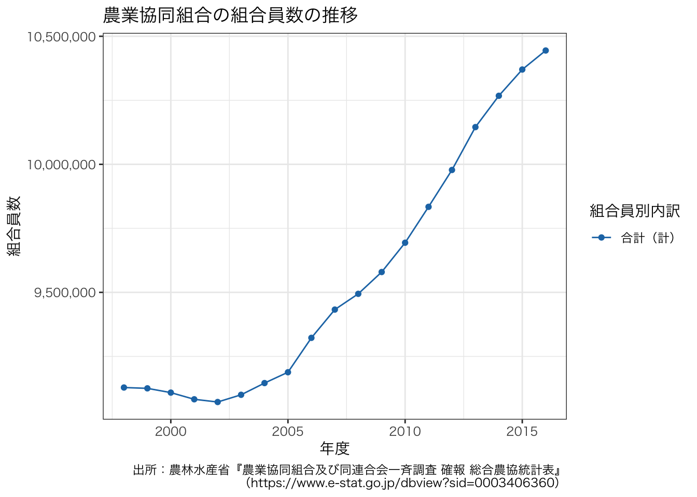
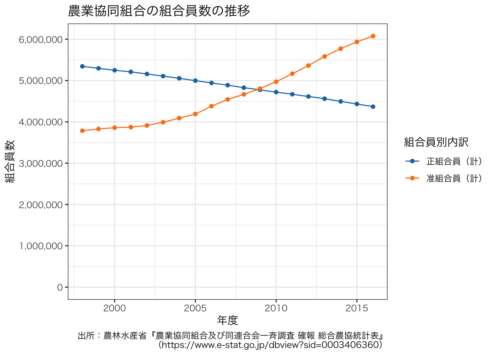

library(httr)
response <- httr::GET(
url = "https://api.e-stat.go.jp/rest/2.1/app/getSimpleStatsData",
query = list(
appId = keyring::key_get("e-stat"),
statsDataId = "0003406360",
sectionHeaderFlg = 2
)
)
response <- httr::content(response)
df <- read.csv(text = sub("^.*\\\"VALUE\\\"\n", "", response), header = TRUE, check.names = FALSE)データの整形
ここでは，農業協同組合の組合員数の推移の把握を試みる。
農業協同組合及び同連合会一斉調査 確報 総合農協統計表
これまで，e-Statから取得したデータをグラフにするまで，何の迷いもなくRのコードを書いているかのように，説明してきた。 しかし実際には，図をどう描くか考える前に，データがどのような構造になっているのかを調べ，試行錯誤している。 ここでは，統計データを取得した後，そのデータの構造を確認しながら，データを整形していく方法を紹介する。
1 e-Statからデータ取得
統計データを用いた作図：e-Stat（API）編の後半では，e-StatのAPIを使って，Rに統計データを取り込んだ。 ここでも同様の手法でデータを取得する。
早速，次のコードを実行し，欲しいデータが取得しよう。 次のコードにある statsDataId = "0003406360" の数字はアクセスしたい統計データのIDである。
このデータはどういう構造になっているのか想像できない。 そこで，データの構造を詳細に確認してみる。
2 データ整形
head(df) cat01_code 組合員別内訳 area_code 都道府県 time_code 時間軸（年度次） unit
1 110 合計_計 0 全国 2016100000 2016年度 人
2 110 合計_計 0 全国 2015100000 2015年度 人
3 110 合計_計 0 全国 2014100000 2014年度 人
4 110 合計_計 0 全国 2013100000 2013年度 人
5 110 合計_計 0 全国 2012100000 2012年度 人
6 110 合計_計 0 全国 2011100000 2011年度 人
value
1 10444426
2 10370172
3 10267614
4 10145363
5 9977967
6 9834031tail(df) cat01_code 組合員別内訳 area_code 都道府県 time_code
14004 380 一戸複数正組合員制実施組合数 47000 沖縄県 2008100000
14005 380 一戸複数正組合員制実施組合数 47000 沖縄県 2007100000
14006 380 一戸複数正組合員制実施組合数 47000 沖縄県 2006100000
14007 380 一戸複数正組合員制実施組合数 47000 沖縄県 2005100000
14008 380 一戸複数正組合員制実施組合数 47000 沖縄県 2004100000
14009 380 一戸複数正組合員制実施組合数 47000 沖縄県 2003100000
時間軸（年度次） unit value
14004 2008年度 組合 1
14005 2007年度 組合 1
14006 2006年度 組合 1
14007 2005年度 組合 1
14008 2004年度 組合 1
14009 2003年度 組合 1dim(df)[1] 14009 8str(df)'data.frame': 14009 obs. of 8 variables:
$ cat01_code : int 110 110 110 110 110 110 110 110 110 110 ...
$ 組合員別内訳 : chr "合計_計" "合計_計" "合計_計" "合計_計" ...
$ area_code : int 0 0 0 0 0 0 0 0 0 0 ...
$ 都道府県 : chr "全国" "全国" "全国" "全国" ...
$ time_code : int 2016100000 2015100000 2014100000 2013100000 2012100000 2011100000 2010100000 2009100000 2008100000 2007100000 ...
$ 時間軸（年度次）: chr "2016年度" "2015年度" "2014年度" "2013年度" ...
$ unit : chr "人" "人" "人" "人" ...
$ value : chr "10444426" "10370172" "10267614" "10145363" ...まず，「都道府県」の列に「全国」があるのが確認できる。 ここでは，都道府県別には検討せず，"全国" の行だけ抽出することに決める。 こうしたデータ抽出の判断は，人間が行わなければならない。 おそらく，area_code が "0" である行は，"全国" に対応していると想像できる。
次に，「時間軸（年度次）」列がそのまま年度が入力されていることが分かる。 そして，"2016年度"，"2015年度"，"2014年度" となっていることから，"年度" を削除して，数値型に変換する必要があることまで見通せる。 time_code 列は，"2016100000"，"2015100000"，"2014100000" という値が入っており，整数型である。 これが 時間軸（年度次） 列と同じ情報かどうかは，これだけでは分からない。 "2016" に続く "100000" の数字は何を意味するのだろうか。
unit 列は単位であり作図には使わないが，数値の意味を確認する際に参照することを覚えておく。 value は数値である。 ただし，型が文字列であることから，気をつけなければならないことがありそうである。 NAに "-" が入力されているかもしれない。 この表はロングであるため，value の型を変更すれば，ggplot2 に使えるかもしれない。
これまでの疑問にひとつずつ答えていこう。 それぞれの列にどういう値が入っているか確認するには，文字列型の場合，table() または unique() を使えばよい。
table(df[, "都道府県"])
1組合当たり 愛知県 愛媛県 茨城県 岡山県
249 249 249 249 249
沖縄県 関東_小計 岩手県 岐阜県 宮崎県
249 249 249 249 249
宮城県 京都府 近畿_小計 九州_小計 熊本県
249 249 249 249 249
群馬県 広島県 香川県 高知県 佐賀県
249 249 249 249 249
埼玉県 三重県 山形県 山口県 山梨県
249 249 249 249 249
滋賀県 鹿児島県 秋田県 新潟県 神奈川県
249 249 249 249 249
青森県 静岡県 石川県 千葉県 全国
249 249 249 249 314
大阪府 大分県 中国・四国_小計 長崎県 長野県
249 249 249 249 249
鳥取県 島根県 東海_小計 東京都 東北_小計
249 249 249 249 249
徳島県 栃木県 奈良県 富山県 福井県
249 249 249 249 249
福岡県 福島県 兵庫県 北海道 北陸_小計
249 249 249 249 249
和歌山県
249 unique(df[, "都道府県"]) [1] "全国" "1組合当たり" "北海道" "東北_小計"
[5] "青森県" "岩手県" "宮城県" "秋田県"
[9] "山形県" "福島県" "関東_小計" "茨城県"
[13] "栃木県" "群馬県" "埼玉県" "千葉県"
[17] "東京都" "神奈川県" "山梨県" "長野県"
[21] "静岡県" "北陸_小計" "新潟県" "富山県"
[25] "石川県" "福井県" "東海_小計" "岐阜県"
[29] "愛知県" "三重県" "近畿_小計" "滋賀県"
[33] "京都府" "大阪府" "兵庫県" "奈良県"
[37] "和歌山県" "中国・四国_小計" "鳥取県" "島根県"
[41] "岡山県" "広島県" "山口県" "徳島県"
[45] "香川県" "愛媛県" "高知県" "九州_小計"
[49] "福岡県" "佐賀県" "長崎県" "熊本県"
[53] "大分県" "宮崎県" "鹿児島県" "沖縄県" table() と unique() は似た結果が出力される。 table() からはそれぞれのレコード数が分かり，unique() からは表にある順番が分かる。 "全国" だけで314もある。 年度の違い以外にも何かありそうなため，全国だけ抽出したとしても，どういうデータ構造になっているのか把握するのは容易ではなさそうである。 実際に，データを抽出してみて，全国のデータが使えない場合は，改めて考えることにして，次に進む。 area_code は確認してもよいが，仮に "0" が "全国" と1対1で対応していなかった場合，area_code の特定が難しくなるため，今回は使わないことにする。
なお，ここでデータフレームの列の指定方法について，簡単に説明しておく。 最も簡単かつ短い書き方は次のとおりである。
df$都道府県これでもよいが，日本語の列名をそのまま使うのは不安である。 例えば，次のようにするとエラーが出る。
df$時間軸（年度次）なぜか。 Rを使い慣れている人だとこの理由が分かるはずである。 Rを使っていると，データフレームがこの列名を変えたがることに気づく。 こうしたエラーの回避策はある。 次のようにするとエラーが出ず，欲しい結果が得られる。
df$'時間軸（年度次）'ただし，こういった書き方をするくらいであれば，このページで書いている方法に統一する方がスマートではないだろうか。 短く書きたいときのみ，$ で指定すればよい。
近年，より高速に処理できるtibbleをデータフレームの代わりに使うことが増えてきた。 もし df がtibbleであるならば，次のようにしなければベクトルデータが得られないことに注意が必要である。
df$`時間軸（年度次）`話を戻す。 次に，time_code 列を確認する。
table(df[, "time_code"])
1998100000 1999100000 2000100000 2001100000 2002100000 2003100000 2004100000
13 13 13 13 13 728 728
2005100000 2006100000 2007100000 2008100000 2009100000 2010100000 2011100000
728 728 1176 1176 1176 1176 1008
2012100000 2013100000 2014100000 2015100000 2016100000
1064 1064 1064 1064 1064 time_code 列の "100000" は，ここでは意味がなく，sub() で削除できることが分かる。 それでは，time_code 列は 時間軸（年度次） 列と1対1で対応しているだろうか。 これを確認する方法は多くある。 例えば，次のようにする。
table(apply(df[, c("time_code", "時間軸（年度次）")], 1, paste, collapse = " "))
1998100000 1998年度 1999100000 1999年度 2000100000 2000年度 2001100000 2001年度
13 13 13 13
2002100000 2002年度 2003100000 2003年度 2004100000 2004年度 2005100000 2005年度
13 728 728 728
2006100000 2006年度 2007100000 2007年度 2008100000 2008年度 2009100000 2009年度
728 1176 1176 1176
2010100000 2010年度 2011100000 2011年度 2012100000 2012年度 2013100000 2013年度
1176 1008 1064 1064
2014100000 2014年度 2015100000 2015年度 2016100000 2016年度
1064 1064 1064 ただし，この方法では結果をいちいち確認しなければならない。 できれば，TRUE で返ってくるかどうかで判断したい。 もしそうなら，次のようにすればよい。
x <- sapply(seq_len(nrow(df)), function(i) (df[i, "time_code"] / 1000000 - 0.1) == as.numeric(sub("年度", "", df[i, "時間軸（年度次）"])))
table(x)x
TRUE
14009 年度の入力ミスはなさそうなので，時間軸（年度次） 列をいじれば，年度の数値が得られることが分かる。
大幅に変更する前に，新しいデータフレームを作成しておく。 以降は新しいデータフレームで作業し，もし間違った場合は，ここに戻ってくれば読み直さずにすむ。 ここで，全国のみのデータを抽出する。
df2 <- df
df2 <- df2[df2[, "都道府県"] == "全国", ]
df2$年度 <- as.double(sub("年度", "", df2[, "時間軸（年度次）"]))
# 必要な列のみ抽出する
df3 <- df2[, c("組合員別内訳", "都道府県", "年度", "unit", "value")]
head(df3) 組合員別内訳 都道府県 年度 unit value
1 合計_計 全国 2016 人 10444426
2 合計_計 全国 2015 人 10370172
3 合計_計 全国 2014 人 10267614
4 合計_計 全国 2013 人 10145363
5 合計_計 全国 2012 人 9977967
6 合計_計 全国 2011 人 9834031全国のみのデータなので，value 列はすべて数値かもしれない。 試しに変換してみる。
as.double(df3$value) [1] 10444426 10370172 10267614 10145363 9977967 9834031 9693855 9579441
[9] 9494334 9432809 9322431 9188153 9145856 9100072 9071894 9082535
[17] 9108596 9125267 9128476 10346202 10272942 10171350 10049996 9883694
[25] 9740311 9600185 9488013 9401968 9343691 9234138 9101310 9059342
[33] 9013949 8986018 8997213 9024008 9041646 9044906 98224 97230
[41] 96264 95367 94273 93720 93670 91428 92366 89118
[49] 88293 86843 86514 86123 85876 85322 84588 83621
[57] 83570 4367858 4433389 4495106 4561504 4614306 4668961 4720274
[65] 4775204 4828192 4888449 4942200 4997797 5054943 5107942 5158762
[73] 5211211 5249499 5296252 5344203 4348560 4415549 4478620 4546050
[81] 4599727 4655215 4707348 4762961 4816570 4877364 4931853 4988029
[89] 5045472 5098862 5149940 5202171 5240785 5287799 5335636 939283
[97] 937145 932121 928584 917488 907486 890718 881294 872402
[105] 853238 812508 804583 786357 787965 783806 769748 746719
[113] 739550 734003 813 838 945 1056 1297 19298
[121] 17840 16486 15454 14579 13746 6234 5656 5035
[129] 4729 4413 4308 13064 12184 11451 10725 10166
[137] 9438 12926 12243 11622 11085 10347 9768 9471
[145] 9080 8822 9040 8714 8453 8567 4172 4027
[153] 3976 3955 3892 3272 3108 3071 48 28
[161] 56 43 60 36 54 75 3707401 3770762
[169] 3818148 3896532 3939700 4007419 4068269 4127031 4184898 4242450
[177] 4294622 4349898 4397013 4444800 4495922 4540713 4573809 4615721
[185] 4651702 6076568 5936783 5772508 5583859 5363661 5165070 4973581
[193] 4804237 4666142 4544360 4380231 4190356 4090913 3992130 3913132
[201] 3871324 3859097 3829015 3784273 5997642 5857393 5692730 5503946
[209] 5283967 5085096 4892837 4725052 4585398 4466327 4302285 4113281
[217] 4013870 3915087 3836078 3795042 3783223 3753847 3709270 78926
[225] 79390 79778 79913 79694 79974 80744 79185 80744
[233] 78033 77946 77075 77043 77043 77054 76282 75874
[241] 75168 75003 197 258 218 223 252 236
[249] 2839 2476 2564 2617 2812 2945 3898 4148
[257] 3842 5244 75892 76656 76996 77073 76617 76793
[265] 15532 13665 12216 12118 379 441 404 409
[273] 476 570 667 506 4901662 4813905 4685872 4556467
[281] 4354676 4195486 4060925 3931565 3824465 3719601 3603866 3443602
[289] 3349944 3270872 3193309 3168465 3163107 3141118 3101037 633
[297] 653 657 677 679 691 694 706 727
[305] 770 799 840 860 891 966 1082 1274
[313] 1446 1620エラーや警告が出ないため，次に進んで問題ない。
df3$value <- as.double(df3$value)いよいよ 組合員別内訳 列に何が入っているか確認する。 こういう予想しにくいものは，データフレームをある程度整理してからの方が理解しやすいであろう。
unique(df3[, "組合員別内訳"]) [1] "合計_計"
[2] "合計_個人"
[3] "合計_団体"
[4] "正組合員_計"
[5] "正組合員_個人"
[6] "正組合員_個人_女性"
[7] "正組合員_個人_組合員たる地位を失わない者"
[8] "正組合員_法人"
[9] "正組合員_法人_農事組合法人"
[10] "正組合員_法人_その他法人"
[11] "正組合員_団体"
[12] "正組合員_団体_農事組合法人"
[13] "正組合員_団体_株式会社"
[14] "正組合員_団体_合名会社"
[15] "正組合員_団体_合資会社"
[16] "正組合員戸数"
[17] "准組合員_計"
[18] "准組合員_個人"
[19] "准組合員_団体"
[20] "准組合員_団体_農業協同組合"
[21] "准組合員_団体_農事組合法人"
[22] "准組合員_団体_その他団体"
[23] "准組合員_団体_株式会社"
[24] "准組合員_団体_合名会社"
[25] "准組合員_団体_合資会社"
[26] "准組合員戸数"
[27] "一戸複数正組合員制実施組合数" ここで，この列が正組合員と准組合員といった分類であることが分かる。 念のため，ここで unit 列との対応を確認しておく。
table(apply(df3[, c("組合員別内訳", "unit")], 1, paste, collapse = " "))
一戸複数正組合員制実施組合数 組合
19
合計_計 人
19
合計_個人 人
19
合計_団体 人
19
准組合員_計 人
19
准組合員_個人 人
19
准組合員_団体 人
19
准組合員_団体_その他団体 人
6
准組合員_団体_株式会社 人
4
准組合員_団体_合資会社 人
4
准組合員_団体_合名会社 人
4
准組合員_団体_農業協同組合 人
6
准組合員_団体_農事組合法人 人
10
准組合員戸数 戸
19
正組合員_計 人
19
正組合員_個人 人
19
正組合員_個人_女性 人
19
正組合員_個人_組合員たる地位を失わない者 人
5
正組合員_団体 人
13
正組合員_団体_株式会社 人
4
正組合員_団体_合資会社 人
4
正組合員_団体_合名会社 人
4
正組合員_団体_農事組合法人 人
4
正組合員_法人 人
6
正組合員_法人_その他法人 人
6
正組合員_法人_農事組合法人 人
6
正組合員戸数 戸
19 法人も単位は "人" になっている。 "組合" と "戸" だけ注意が必要である。
ここで，見栄えをよくするために，アンダーバーを括弧に変換しておく。
# _を（）に変換する（factorではない場合）
df3[, "組合員別内訳"] <- apply(df3[, "組合員別内訳", drop = FALSE], 1, function(x) {
if (length(grep("_", x)) > 0) {
x <- paste0(sub("_", "（", x), "）")
}
return(x)}
)
# _を2つ使っているケースに対応
df3[, "組合員別内訳"] <- apply(df3[, "組合員別内訳", drop = FALSE], 1, function(x) {
if (length(grep("_", x)) > 0) {
x <- paste0(sub("_", "（", x), "）")
}
return(x)}
)
unique(df3[, "組合員別内訳"]) [1] "合計（計）"
[2] "合計（個人）"
[3] "合計（団体）"
[4] "正組合員（計）"
[5] "正組合員（個人）"
[6] "正組合員（個人（女性））"
[7] "正組合員（個人（組合員たる地位を失わない者））"
[8] "正組合員（法人）"
[9] "正組合員（法人（農事組合法人））"
[10] "正組合員（法人（その他法人））"
[11] "正組合員（団体）"
[12] "正組合員（団体（農事組合法人））"
[13] "正組合員（団体（株式会社））"
[14] "正組合員（団体（合名会社））"
[15] "正組合員（団体（合資会社））"
[16] "正組合員戸数"
[17] "准組合員（計）"
[18] "准組合員（個人）"
[19] "准組合員（団体）"
[20] "准組合員（団体（農業協同組合））"
[21] "准組合員（団体（農事組合法人））"
[22] "准組合員（団体（その他団体））"
[23] "准組合員（団体（株式会社））"
[24] "准組合員（団体（合名会社））"
[25] "准組合員（団体（合資会社））"
[26] "准組合員戸数"
[27] "一戸複数正組合員制実施組合数" 3 作図
作図のためには，ここまでで整形されたデータフレームから，作図に必要な行を抽出すればよい。
3.1 作図1
組合員の合計の折れ線グラフを描くことにしよう。 その前に，これまでデータフレームに番号を振っており，どれが最新か分かりづらいため，最新のデータフレームを分かりやすいデータフレーム名に変更しておく。
dfja <- df3
library(ggplot2)
library(ggsci)
dfja1 <- dfja[grep("^合計（計）$", dfja[, "組合員別内訳"]), ]
g <- ggplot(data = dfja1, aes(x = 年度, y = value, group = 組合員別内訳, colour = 組合員別内訳)) +
geom_line() +
geom_point() +
scale_y_continuous(labels = scales::comma_format(), name = "組合員数") +
ggtitle("農業協同組合の組合員数の推移") +
labs(caption = "出所：農林水産省『農業協同組合及び同連合会一斉調査 確報 総合農協統計表』\n（https://www.e-stat.go.jp/dbview?sid=0003406360）") +
theme_bw() +
scale_color_d3()
g + theme(text = element_text(family = "HiraKakuProN-W3"))
組合員数が極端に増加しているように見えるのが気になるようなら，縦軸が0から始まるようにするとよい。
g <- ggplot(data = dfja1, aes(x = 年度, y = value, group = 組合員別内訳, colour = 組合員別内訳)) +
geom_line() +
geom_point() +
scale_y_continuous(limits = c(0, NA), breaks = seq(0, 11000000, 1000000), labels = scales::comma_format(), name = "組合員数") +
ggtitle("農業協同組合の組合員数の推移") +
labs(caption = "出所：農林水産省『農業協同組合及び同連合会一斉調査 確報 総合農協統計表』\n（https://www.e-stat.go.jp/dbview?sid=0003406360）") +
theme_bw() +
scale_color_d3()
g + theme(text = element_text(family = "HiraKakuProN-W3"))
続いて，正組合員と准組合員の折れ線グラフを描いてみる。
dfja1 <- dfja[grep("^正組合員（計）$|^准組合員（計）$", dfja[, "組合員別内訳"]), ]
dfja1[, "組合員別内訳"] <- factor(dfja1[, "組合員別内訳"], levels = unique(dfja1[, "組合員別内訳"]))
g <- ggplot(data = dfja1, aes(x = 年度, y = value, group = 組合員別内訳, colour = 組合員別内訳)) +
geom_line() +
geom_point() +
scale_y_continuous(limits = c(0, NA), breaks = seq(0, 6000000, 1000000), labels = scales::comma_format(), name = "組合員数") +
ggtitle("農業協同組合の組合員数の推移") +
labs(caption = "出所：農林水産省『農業協同組合及び同連合会一斉調査 確報 総合農協統計表』\n（https://www.e-stat.go.jp/dbview?sid=0003406360）") +
theme_bw() +
scale_color_d3()
g + theme(text = element_text(family = "HiraKakuProN-W3"))
正組合員が准組合員が逆転する折れ線グラフが描けた。
3.2 作図2
次に，個人以外の組合員についても見ていこう。
dfja2 <- dfja[grep("^正組合員（個人）$|^正組合員（法人）$|^正組合員（団体）$|^准組合員（個人）$|^准組合員（団体）$", dfja[, "組合員別内訳"]), ]
dfja2[, "組合員別内訳"] <- factor(dfja2[, "組合員別内訳"], levels = unique(dfja2[, "組合員別内訳"]))
g <- ggplot(data = dfja2, aes(x = 年度, y = value, group = 組合員別内訳, colour = 組合員別内訳)) +
geom_line() +
geom_point() +
scale_y_continuous(limits = c(0, NA), labels = scales::comma_format(), name = "組合員数") +
ggtitle("農業協同組合の組合員数（個人，法人，団体）の推移") +
labs(caption = "出所：農林水産省『農業協同組合及び同連合会一斉調査 確報 総合農協統計表』\n（https://www.e-stat.go.jp/dbview?sid=0003406360）") +
theme_bw() +
scale_color_d3()
g + theme(text = element_text(family = "HiraKakuProN-W3"))
ggsave(g, file = file.path(outdir, "number_of_ja_members_kojin_dantai.pdf"), width = 8, height = 4)正組合員（団体）のグラフが途中で消え，正組合員（法人）のグラフが途中から現れていることが気になる。 正組合員（団体）の値と正組合員（法人）の値が近いことから，統計の取り方が変わった可能性が考えられる。 元のデータで，正組合員（団体）が途中から欠損値になっているかどうかを確認してみる。 表を見る場合は，データをロングではなくワイドにした方が分かりやすい。
tmp <- reshape2::dcast(dfja2, 年度 ~ 組合員別内訳)
knitr::kable(tmp, digits = 3, format.args = list(big.mark = ",", scientific = FALSE))| 年度 | 正組合員（個人） | 正組合員（法人） | 正組合員（団体） | 准組合員（個人） | 准組合員（団体） |
|---|---|---|---|---|---|
| 1,998 | 5,335,636 | NA | 8,567 | 3,709,270 | 75,003 |
| 1,999 | 5,287,799 | NA | 8,453 | 3,753,847 | 75,168 |
| 2,000 | 5,240,785 | NA | 8,714 | 3,783,223 | 75,874 |
| 2,001 | 5,202,171 | NA | 9,040 | 3,795,042 | 76,282 |
| 2,002 | 5,149,940 | NA | 8,822 | 3,836,078 | 77,054 |
| 2,003 | 5,098,862 | NA | 9,080 | 3,915,087 | 77,043 |
| 2,004 | 5,045,472 | NA | 9,471 | 4,013,870 | 77,043 |
| 2,005 | 4,988,029 | NA | 9,768 | 4,113,281 | 77,075 |
| 2,006 | 4,931,853 | NA | 10,347 | 4,302,285 | 77,946 |
| 2,007 | 4,877,364 | NA | 11,085 | 4,466,327 | 78,033 |
| 2,008 | 4,816,570 | NA | 11,622 | 4,585,398 | 80,744 |
| 2,009 | 4,762,961 | NA | 12,243 | 4,725,052 | 79,185 |
| 2,010 | 4,707,348 | NA | 12,926 | 4,892,837 | 80,744 |
| 2,011 | 4,655,215 | 13,746 | NA | 5,085,096 | 79,974 |
| 2,012 | 4,599,727 | 14,579 | NA | 5,283,967 | 79,694 |
| 2,013 | 4,546,050 | 15,454 | NA | 5,503,946 | 79,913 |
| 2,014 | 4,478,620 | 16,486 | NA | 5,692,730 | 79,778 |
| 2,015 | 4,415,549 | 17,840 | NA | 5,857,393 | 79,390 |
| 2,016 | 4,348,560 | 19,298 | NA | 5,997,642 | 78,926 |
予想どおりのデータである。 ちなみに，年度のコンマは不要だが，消し方が分からない。
3.3 作図3
次に，授業では女性の組合員が増えていることを説明した。 このことを実際のデータで確認してみよう。
dfja3 <- dfja[grep("^正組合員（個人（女性））$", dfja[, "組合員別内訳"]), ]
g <- ggplot(data = dfja3, aes(x = 年度, y = value, group = 組合員別内訳, colour = 組合員別内訳)) +
geom_line() +
geom_point() +
scale_y_continuous(limits = c(0, NA), labels = scales::comma_format(), name = "組合員数") +
ggtitle("農業協同組合の組合員数（女性）の推移") +
labs(caption = "出所：農林水産省『農業協同組合及び同連合会一斉調査 確報 総合農協統計表』\n（https://www.e-stat.go.jp/dbview?sid=0003406360）") +
theme_bw() +
theme(legend.position = c(.85, .15),
legend.background = element_rect(fill = "transparent")) +
scale_color_d3()
g + theme(text = element_text(family = "HiraKakuProN-W3"))
ggsave(g, file = file.path(outdir, "number_of_ja_members_female.pdf"), width = 8, height = 4)確かに女性の組合員は増加していることが分かる。 ただし，これだと組合員全体に占める女性の比率が分からないので，上述のグラフと重ねてもよいだろう。
dfja3 <- dfja[grep("^正組合員（個人（女性））$|^正組合員（計）$|^准組合員（計）$", dfja[, "組合員別内訳"]), ]
dfja3[, "組合員別内訳"] <- factor(dfja3[, "組合員別内訳"], levels = unique(dfja3[, "組合員別内訳"]))
g <- ggplot(data = dfja3, aes(x = 年度, y = value, group = 組合員別内訳, colour = 組合員別内訳)) +
geom_line() +
geom_point() +
scale_y_continuous(limits = c(0, NA), breaks = seq(0, 6000000, 1000000), labels = scales::comma_format(), name = "組合員数") +
ggtitle("農業協同組合の組合員数の推移") +
labs(caption = "出所：農林水産省『農業協同組合及び同連合会一斉調査 確報 総合農協統計表』\n（https://www.e-stat.go.jp/dbview?sid=0003406360）") +
theme_bw() +
scale_color_d3()
g + theme(text = element_text(family = "HiraKakuProN-W3"))ggsave(g, file = file.path(outdir, "number_of_ja_members_female_with_all.pdf"), width = 8, height = 4)正組合員全体が減少している中で，女性が増加していることが1つのグラフでわかる。 女性の増加に焦点を当てたければ，女性比率を計算するとよい。 ここで，法人と団体は除いて計算することに気をつけよう。
dfja3 <- dfja[grep("^正組合員（個人（女性））$|^正組合員（個人）$", dfja[, "組合員別内訳"]), ]
dfja3 <- reshape2::dcast(dfja3, 年度 ~ 組合員別内訳)
dfja3[, "女性比率"] <- dfja3[, "正組合員（個人（女性））"] / dfja3[, "正組合員（個人）"]
g <- ggplot(data = dfja3, aes(x = 年度, y = 女性比率)) +
geom_line() +
geom_point() +
scale_y_continuous(limits = c(0, 1), name = "女性比率") +
ggtitle("農業協同組合の正組合員に占める女性比率の推移") +
labs(caption = "出所：農林水産省『農業協同組合及び同連合会一斉調査 確報 総合農協統計表』\n（https://www.e-stat.go.jp/dbview?sid=0003406360）") +
theme_bw() +
theme(legend.position = "bottom") +
scale_color_d3()
g + theme(text = element_text(family = "HiraKakuProN-W3"))ggsave(g, file = file.path(outdir, "number_of_ja_members_female_ratio.pdf"), width = 8, height = 4)凡例がなく，線と点の色が黒い。 ここで描画に用いているデータフレームはワイドである。 ggplot2 で凡例を付け，色分けするためには，group を使わなければならず，そのためにはデータをワイドではなくロングにする必要がある。
3.4 作図4
組合員戸数の推移はどうだろうか。
dfja4 <- dfja[grep("^正組合員戸数$|^准組合員戸数$", dfja[, "組合員別内訳"]), ]
dfja4[, "組合員別内訳"] <- factor(dfja4[, "組合員別内訳"], levels = unique(dfja4[, "組合員別内訳"]))
g <- ggplot(data = dfja4, aes(x = 年度, y = value, group = 組合員別内訳, colour = 組合員別内訳)) +
geom_line() +
geom_point() +
scale_y_continuous(limits = c(0, NA), labels = scales::comma_format(), name = "組合員戸数") +
ggtitle("農業協同組合の組合員戸数の推移") +
labs(caption = "出所：農林水産省『農業協同組合及び同連合会一斉調査 確報 総合農協統計表』\n（https://www.e-stat.go.jp/dbview?sid=0003406360）") +
theme_bw() +
scale_color_d3()
g + theme(text = element_text(family = "HiraKakuProN-W3"))
ggsave(g, file = file.path(outdir, "number_of_ja_members_household.pdf"), width = 8, height = 4)3.5 作図5
ここで扱っているのデータには，一戸複数正組合員制実施組合数の値も含まれている。 授業を踏まえると，この組合数は減少している可能性が考えられる。
dfja5 <- dfja[grep("^一戸複数正組合員制実施組合数$", dfja[, "組合員別内訳"]), ]
g <- ggplot(data = dfja5, aes(x = 年度, y = value, group = 組合員別内訳, colour = 組合員別内訳)) +
geom_line() +
geom_point() +
scale_y_continuous(limits = c(0, NA), labels = scales::comma_format(), name = "組合数") +
ggtitle("一戸複数正組合員制実施組合数の推移") +
labs(caption = "出所：農林水産省『農業協同組合及び同連合会一斉調査 確報 総合農協統計表』\n（https://www.e-stat.go.jp/dbview?sid=0003406360）") +
theme_bw() +
theme(legend.position = "bottom") +
scale_color_d3()
g + theme(text = element_text(family = "HiraKakuProN-W3"))
ggsave(g, file = file.path(outdir, "number_of_ja_multiple_members_per_household.pdf"), width = 8, height = 4)実際にグラフを作成すると，一戸複数正組合員制実施組合数の現象が確認できる。 ただし，農業協同組合の数が減少しているため，この数値の解釈には注意が必要である。
3.6 作図6
正組合員（個人（組合員たる地位を失わない者））は何だろうか。 授業を踏まえると，これは土地持ち非農家の数を反映したものかもしれない。 定義については，統計データではなく，別の方法で調べる。 例えば，以下のような資料がある。
農林水産省「農地を所有している非農家の組合員資格保有という農協法の理念に違反している状況の解消」2012年1月
dfja6 <- dfja[grep("^正組合員（個人（組合員たる地位を失わない者））$", dfja[, "組合員別内訳"]), ]
g <- ggplot(data = dfja6, aes(x = 年度, y = value, group = 組合員別内訳, colour = 組合員別内訳)) +
geom_line() +
geom_point() +
scale_y_continuous(limits = c(0, NA), labels = scales::comma_format(), name = "組合員数") +
ggtitle("正組合員（個人（組合員たる地位を失わない者））") +
labs(caption = "出所：農林水産省『農業協同組合及び同連合会一斉調査 確報 総合農協統計表』\n（https://www.e-stat.go.jp/dbview?sid=0003406360）") +
theme_bw() +
theme(legend.title = element_text(size = 8),
legend.text = element_text(size = 8),
plot.caption = element_text(size = 7)) +
scale_color_d3()
g + theme(text = element_text(family = "HiraKakuProN-W3"))
ggsave(g, file = file.path(outdir, "number_of_ja_members_nonfarmer.pdf"), width = 8, height = 4)